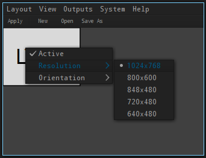

lang fr|gb

configurer l'affichage
la configuration de l'affichage est gérée par arandr. une entrée de menu est présente dans chaque session du livarp.

si vous utilisez plusieurs écrans, un script de détection dualdetect.sh est situé dans votre $HOME/bin/. il lance les commandes simples de xrandr afin de configurer votre second écran (à éditer selon votre configuration).une fois le script édité à votre convenance, il faudra le lancer depuis votre ~/.xinitrc en décommentant la ligne appropriée.
## multi-moniteur ##
~/bin/dualdetect.sh